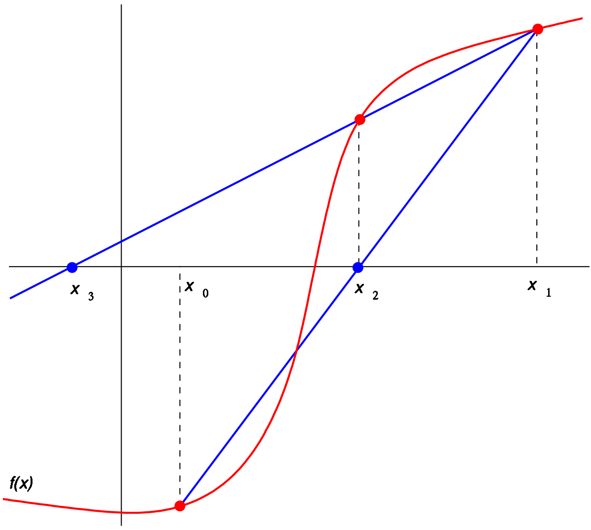

Метод хорд¶
Обзор¶
В численном анализе метод секущих - это алгоритм поиска корней, который использует последовательность корней секущих линий для лучшего приближения корня функции \(f\). Метод секущих можно рассматривать как конечно-разностную аппроксимацию метода Ньютона. Однако этот метод был разработан независимо от метода Ньютона и предшествовал ему более чем на 3000 лет.
{kind=link}
Метод¶
Метод секанса определяется рекуррентным соотношением
Как видно из рекуррентного соотношения, метод секущей требует двух начальных значений \(x_0\) и \(x_1\), которые в идеале следует выбирать так, чтобы они лежали близко к корню.
Вывод метода¶
Начиная с начальных значений \(x_0\) и \(x_1\), мы строим линию через точки \((x0, f(x0))\) and \((x1, f(x1))\), как показано на рисунке выше. В форме наклон-пересечение уравнение этой прямой имеет вид
Корень этой линейной функции, то есть значение \(x\) такое, что \(y=0\), равно
Затем мы используем это новое значение \(x\) как \(x_2\) и повторяем процесс, используя \(x_1\) и \(x_2\) вместо \(x_0\) и \(x_1\). Мы продолжаем этот процесс, решая для \(x_3\), \(x_4\) и т. Д., Пока не достигнем достаточно высокого уровня точности (достаточно малая разница между \(x_n\) и \(x_n-1\)):
Использование¶
Представьте, что мы хотим минимизировать следующую функцию:
Тогда код будет выглядеть так:
// example_root_secant.cpp
#include <iostream>
#include "../src/numerary.hpp" // Numerary library
using namespace std;
using namespace numerary;
/* Function to found the root */
double f(double x) {
return sin(x);
}
/* The main function */
int main() {
const double eps = 1.e-9; // eps value for method (1.e-9 by default)
double a = -1; // "a" value of segment [a, b]
double b = 1; // "b" value of segment [a, b]
double root;
short int is_found;
is_found = Numerary::root(f, a, b, &root, "secant", eps);
if (is_found == 1) {
cout << "Root is in x = " << root << endl;
} else {
cout << "Method not allowed!" << endl;
}
return 0;
}